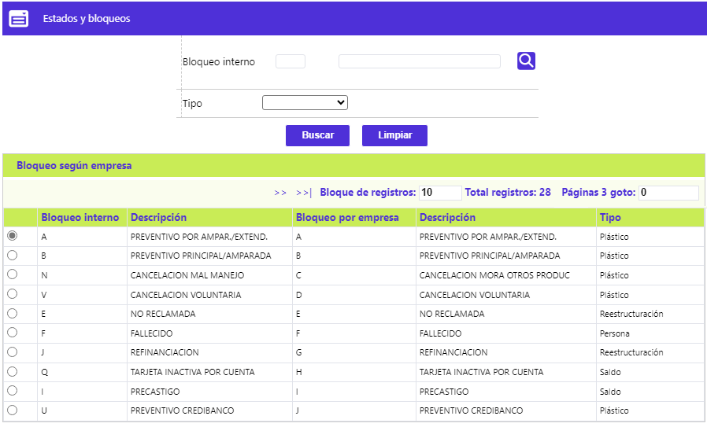
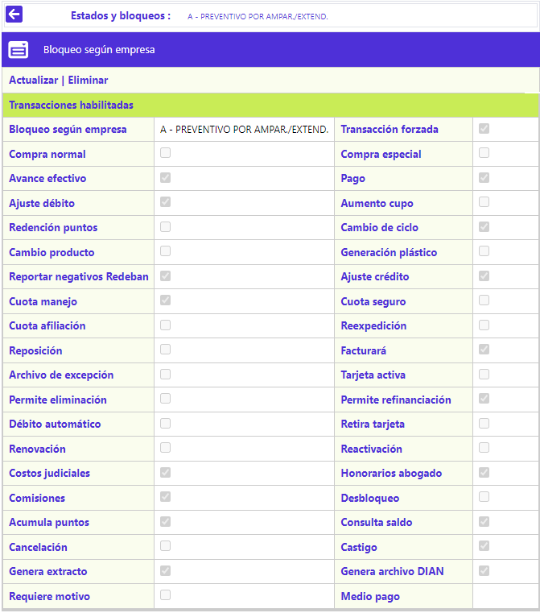
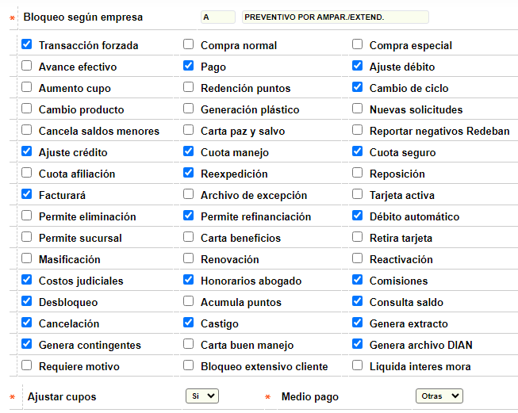
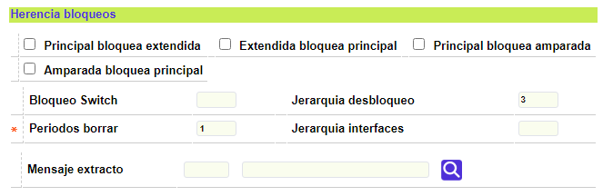

Estados y bloqueos
En este formulario se definen a partir de los códigos de bloqueo parametrizados, los diferentes bloqueos que la entidad puede asociar a las tarjetas y las transacciones o acciones que se pueden realizar en cada uno de ellos. El formulario no permite la adición, modificación o eliminación de ninguno de los registros desplegados.

El formulario contiene la opción Bloqueo según empresa, y cuando el usuario marca cualquiera de los registros y utiliza esta funcionalidad se despliega un formulario

El formulario denominado Bloqueos según empresa contiene los enlaces:Actualizar y Eliminar
Actualizar: Al activar ese enlace se despliega un nuevo formulario que se encuentra dividido en dos grandes bloques: Transacciones habilitadas y Herencia Bloqueos.
En este primer bloque se marcan las casillas para indicar de todas las transacciones allí contenidas cuales están permitidas para el bloqueo

Descripción de campos
|
Bloqueo según empresa |
En este campo obligatorio se define el código y nombre con los cuales la entidad va a identificar internamente sus propios bloqueos para relacionarlos con sus respectivos equivalentes que se encuentran definidos previamente en los códigos de bloqueo del núcleo. |
|
Trx forzada |
Una transacción forzada es aquella transacción que no tiene en cuenta las validaciones como por ejemplo el disponible para su aplicación; esta instrucción se sobrepone a la definida en la opción transacciones por empresa. Este campo se debe marcar si la entidad define que el bloqueo permite una transacción con dichas características. |
|
Compra normal |
Este campo se debe marcar si la entidad define que el bloqueo permite una transacción con dichas características, de acuerdo con lo definido en transacciones por empresa. |
|
Compra especial |
Se define como compra especial aquella transacción que se haya definido con características propias de la entidad, ya sea por convenios o por alguna característica particular que la difiere de una compra normal. Este campo se debe marcar si la entidad define que el bloqueo se permite realizar tal transacción. |
|
Avance efectivo |
Este campo se debe marcar si la entidad define que el bloqueo se permite una transacción con dichas características. |
|
Pago |
Campo que se debe marcar si la entidad define que el bloqueo si permite una transacción con dichas características. |
|
Ajuste débito |
Un ajuste débito es una transacción de consumo o cargo que afecta directamente el disponible del cliente, realizada a través del centro de captura de la entidad. Este campo se debe marcar si la entidad define que el bloqueo permite realizar una transacción con dichas características. |
|
Aumento cupo |
Este campo se debe marcar si la entidad determina que con el bloqueo, se puede efectuar aumento de cupo a la tarjeta o crédito. |
|
Redención puntos |
Si el bloqueo permite la redención de los puntos acumulados por la tarjeta se debe marcar el campo. |
|
Cambio de ciclo |
Este campo se marca si el bloqueo permite cambio de ciclo de facturación para la tarjeta. Para su aplicación se debe tener en cuenta la parametrización del filtro que evalua los bloqueos de la tarjeta en el tipo de solicitud correspondiente. |
|
Cambio producto |
Campo que se marca si el bloqueo permite cambio de producto para la tarjeta. Para su aplicación se debe tener en cuenta la parametrización del filtro que evalua los bloqueos de la tarjeta en el tipo de solicitud correspondiente. |
|
Generación plástico |
Este campo se marca si el bloqueo permite la generación de plásticos para las tarjetas o crédito sobre el cual está aplicado, cuando inicialmente este no posee plástico. Para su aplicación se debe tener en cuenta la parametrización del filtro que evalua los bloqueos de la tarjeta en el tipo de solicitud correspondiente. |
|
Nuevas solicitudes |
Campo que en el que se indica si el bloqueo permite el ingreso de nuevas solicitudes para el cliente que posee el producto sobre el cual está aplicado. |
|
Cancela saldos menores |
Este campo se marca si el bloqueo permite la cancelación de saldos, de la tarjeta o crédito sobre la cual está aplicado, cuyo monto sea inferior al definido en el campo Valores traslados saldos menores del formulario más parámetros de la opción Definición de Productos. |
|
Carta Paz y Salvo |
Campo que se marca si el bloqueo permite la generación de paz y salvo. |
|
Reportar Negativos Redeban |
En este campo se indica si el bloqueo debe hacer que se incluya la tarjeta en el archivo de negativos de redeban. |
|
Ajuste crédito |
Un ajuste crédito es una transacción de abono para el cliente realizada en el centro de captura de la entidad. A través de este campo se debe marcar si el bloqueo permite efectuar dicho ajuste. |
|
Cuota manejo |
En el evento que se encuentre marcado este campo, significa que aunque la tarjeta o crédito tenga aplicado el bloqueo, éste permitirá cargo al cliente por concepto de cuota de manejo. |
|
Cuota seguro |
En el evento que se encuentre marcado este campo, significa que aunque la tarjeta o crédito tenga aplicado el bloqueo, éste permitirá cargo al cliente por concepto de cuota de seguro. |
|
Cuota afiliación |
En el evento que se encuentre marcado este campo, significa que aunque la tarjeta o crédito tenga aplicado el bloqueo, éste permitirá cargo al cliente por concepto de cuota de afiliación. |
|
Reexpedición |
Si este campo se encuentra marcado, significa que el bloqueo permitirá generar nuevo plástico por concepto de reexpedición. Para su aplicación se debe tener en cuenta la parametrización del filtro que evalua los bloqueos de la tarjeta en el tipo de solicitud correspondiente. |
|
Reposición |
En el evento que se encuentre marcado este campo, significa que el bloqueo permitirá generar nuevo plástico por concepto de reposición. Para su aplicación se debe tener en cuenta la parametrización del filtro que evalua los bloqueos de la tarjeta en el tipo de solicitud correspondiente. |
|
Facturará |
Cuando este campo se encuentra marcado significa que el bloqueo permitirá que la tarjeta o crédito sea facturado. Estará marcado por defecto en el momento de homologar los bloqueos del sistema con los de la entidad y no permitirá modificaciones, excepto para el bloqueo castigo. |
|
Exception file |
Campo en el cual se marca si el bloqueo permite reportar en el archivo de excepción, base para las autorizaciones, aquellas tarjetas o créditos sobre los cuales se encuentra aplicado dicho bloqueo. |
|
Tarjeta activa |
Permite definir si las tarjetas o créditos que poseen dicho bloqueo se consideran productos activos. |
|
Permite eliminación |
Si el bloqueo se encuentra marcado en este campo significa que el registro del plástico podrá ser eliminado de la base de datos. |
|
Permite refinanciación |
Si el bloqueo se encuentra marcado en este campo significa que el crédito puede ser normalizado mediante la reestructuración o refinanciación. |
|
Débito Automático |
Campo en el cual se marca si el bloqueo permite o no reportar en el archivo de Débitos automáticos, el valor correspondiente a la obligación de aquellas tarjetas o créditos sobre los cuales se encuentra aplicado dicho bloqueo. |
|
Permite Sucursal |
Indica si el bloqueo permite efectuar cambio de sucursal. |
|
Carta Beneficios |
Este campo se marca para indicar si el bloqueo permite la expedición de la Carta de Beneficios. |
|
Retira Tarjeta |
Campo en el cual se marca si el bloqueo debe incluir en el archivo de negativos de redeban la solicitud de retención de la tarjeta. |
|
Masificación |
Mediante esta personalización, si el bloqueo se encuentra marcado en este campo significa que el proceso del mismo nombre efectúa traslado de los productos Gente U |
|
Renovación |
En el evento que se encuentre marcado este campo, significa que aunque la tarjeta o crédito tenga el bloqueo, éste permitirá generar nuevo plástico por concepto de renovación. Para su aplicación se debe tener en cuenta la parametrización del filtro que evalua los bloqueos de la tarjeta en el tipo de solicitud correspondiente. |
|
Reactivación |
Si este campo se encuentra marcado, significa que aunque aplique determinado bloqueo, éste permitirá generar nuevo plástico por concepto de reactivación. Para su aplicación se debe tener en cuenta la parametrización del filtro que evalua los bloqueos de la tarjeta en el tipo de solicitud correspondiente. |
|
Costos judiciales |
La transacción de costos judiciales es aquella transacción que se origina por un proceso de recaudo de cartera judicialmente, la entidad debe marcar este campo si define que el bloqueo permite cargos al cliente por dicho concepto. |
|
Honorarios abogado |
En el momento en que se genere el recaudo de cartera a través de un cobro prejurídico o jurídico se pueden ocasionar honorarios, los cuales serán cargados a la tarjeta o crédito del cliente si la entidad marca este campo para el bloqueo. |
|
Comisiones |
La transacción de comisiones es aquella transacción que se desprende de una transacción original por ejemplo el avance de efectivo en cajeros, la transacción que se desprende de la original es la comisión por la utilización del cajero, de tal manera que si la entidad marca este campo significa que determinado bloqueo permite cargar al cliente valores por dichos conceptos. |
|
Desbloqueo |
Si la entidad marca este campo, significa que determinado bloqueo se puede levantar en un momento dado. En caso contrario, significa que el bloqueo es definitivo. |
|
Acumula puntos |
Campo en el que se indica si el bloqueo permite que la tarjeta o crédito acumulen puntos de acuerdo con el esquema al que pertenezca la misma. |
|
Consulta saldo |
Permite definir si el bloqueo permite al cliente la consulta de saldo del crédito. |
|
Cancelación |
Este campo permite definir si el bloqueo permite la cancelación de la tarjeta o crédito, en el evento en que el cliente desee hacer una devolución / cancelación voluntaria del mismo. Para su aplicación se debe tener en cuenta la parametrización del filtro que evalua los bloqueos de la tarjeta en el tipo de solicitud correspondiente. |
|
Castigo |
En este campo se determina si el bloqueo permite efectuar el castigo del saldo de la tarjeta o crédito, asumiendo la entidad el valor de la deuda del cliente. |
|
Genera extracto |
Permite definir si para las tarjetas o créditos que poseen el bloqueo se generarán extracto o no. |
|
Genera contingentes |
En este campo se define si los saldos de las obligaciones de las tarjetas o créditos que tengan el bloqueo suman o restan para el cálculo del disponible, lo que afecta la contabilidad de los contingentes. |
|
Carta Buen Manejo |
Este campo se marca para indicar si el bloqueo permite o no la expedición de Carta de Buen Manejo de la tarjeta. |
|
Genera Dian |
Campo que indica si el bloqueo permite incluir o no la tarjeta o crédito en los archivos con destino a la Dian. |
|
Ajustar cupos |
Combo que contiene los enlaces:si o no, para indicar si el bloqueo origina que el proceso de recálculo de cupos tome el saldo tanto de la líneas de crédito como de la tarjeta como cupo asignado, esto con el objetivo de dejar el disponible igual a cero (0) y no mostrar saldos en cuentas contables contingentes. |
|
Medio pago |
En este combo se indica si el bloqueo aplica para los productos crédito o débito. Es importante tener en cuenta que a los bloqueos a los cuales se les asocie el medio 1 (tarjeta de crédito) serán los únicos habilitados para ser aplicados manualmente desde la opción Novedad bloqueo plástico. |
En el bloque Herencia Bloqueos, se definen entre otros la jerarquía de los bloqueos respecto a los clientes principales de las tarjetas y sus productos extendidos o amparados y viceversa.

Descripción de campos
|
Principal bloquea extendida |
Permite definir si el bloqueo que se aplique sobre el cliente principal del crédito o tarjeta afecta de igual manera a las tarjetas o créditos de sus clientes extendidos, colocándoles a éstos un bloqueo preventivo definido como preventivo por principal. |
|
Extendida bloquea principal |
Indica si el bloqueo que se aplique sobre el cliente que tiene características de extendido afecta de igual manera a la tarjeta o crédito del cliente principal del cual depende, colocándole a éste un bloqueo preventivo definido como preventivo por amparado o extendido. |
|
Principal bloquea amparada |
Campo en el que se define si ci cuando se aplique el bloqueosobre el cliente principal del crédito o tarjeta afecta de igual manera a las tarjetas o créditos de sus clientes amparados, colocándoles a éstos un bloqueo preventivo definido como preventivo por principal. |
|
Amparada bloquea principal |
Indica si el bloqueo que se aplique sobre el cliente que tiene características de amparado afecta de igual manera a la tarjeta o crédito del cliente principal del cual depende, colocándole a éste un bloqueo preventivo definido como preventivo por amparado o extendido. |
|
Bloqueo switch |
Corresponde a la identificación del bloqueo que maneja la entidad, homologado hacia el código de bloqueo que utiliza el autorizador. |
|
Períodos borrar |
Campo obligatorio en el cual se define el total de períodos (expresado en meses), después de los cuales se puede borrar la información de las tablas. |
|
Jerarquía desbloqueo |
Este campo permite a la entidad asignar prioridad en el manejo de los bloqueos, es decir, cuál bloqueo puede ser eliminado o reemplazado por otro y cuál no. Aplica para aquellos bloqueos a los cuales se les ha asignado la condición de tipo 'Plastico' |
|
Jerarq. Interfaces |
A través de este campo , la entidad puede asignar la prioridad en el manejo de los bloqueos que viajan hacia las interfases requeridas, es decir, si un crédito o tarjeta tiene varios bloqueos, cuál prima de todos. |
|
Mensaje extracto |
Campo obligatorio en el cual se permite definir a través de una lista de valores, el mensaje que aparecerá en el extracto del cliente de acuerdo con el bloqueo. |